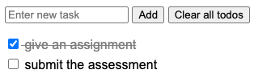

Assignment
Create the simple to-do list with UI and functions below
- One input text for user to input the todo information (task)
- 'Add' button: to add new item with text from input. Once new item added, clear input text.
- Once checkbox mark as checked, the detail of to-do item will be strikethrough
- 'Clear all todos' button: to clear all todo items from list